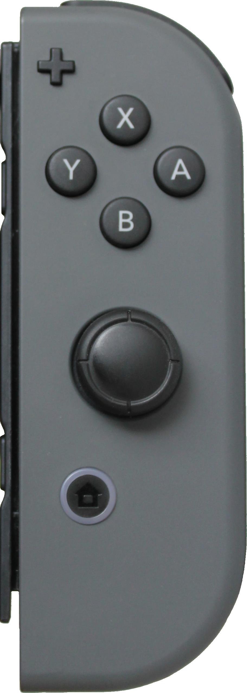
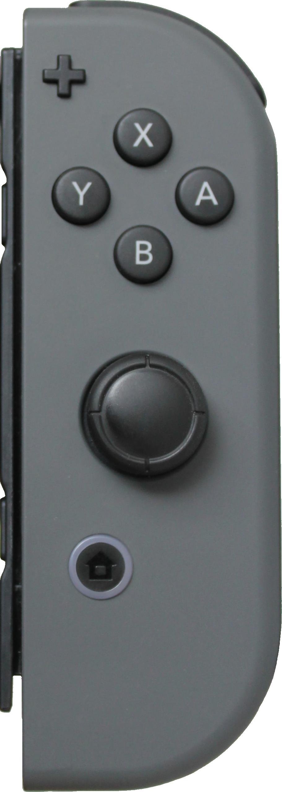

Super Smash Bros has been announced for the Switch.
In the latest Nintendo direct a last minute announcement revealed that Super Smash Bros would be coming to the Switch in 2018.
Dark Souls Remastered Switch Network Test
In the latest Nintendo direct It was revealed that a netword test will be held for the upcoming remaster of Dark Souls. More info to come.
Dark Souls Solaire of Astora Amiibo announced.
Dark Souls is coming to Nintendo Switch this summer, and one of the game's breakout stars, Solaire of Astora, is getting his own amiibo.